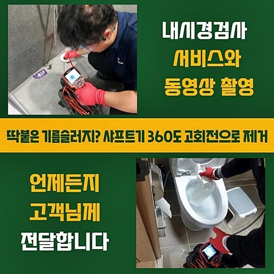
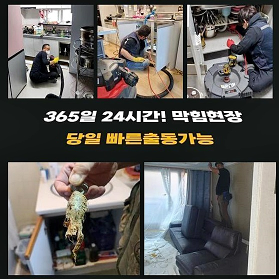
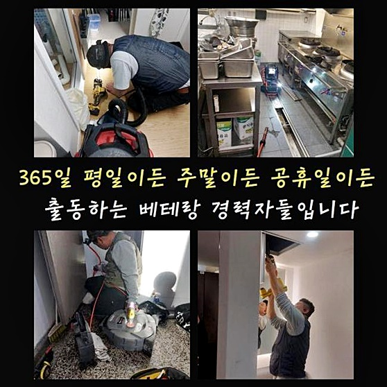
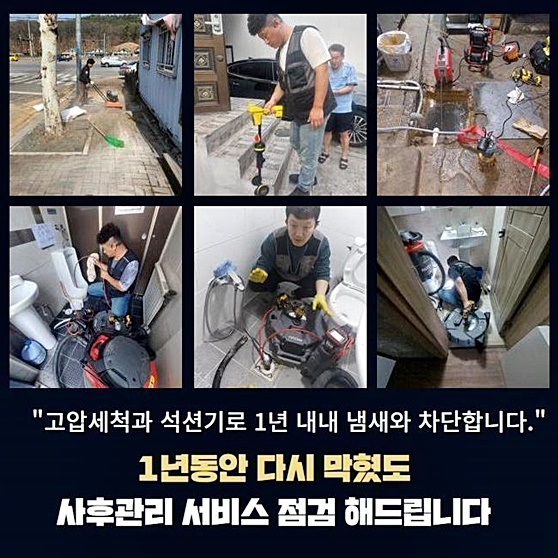
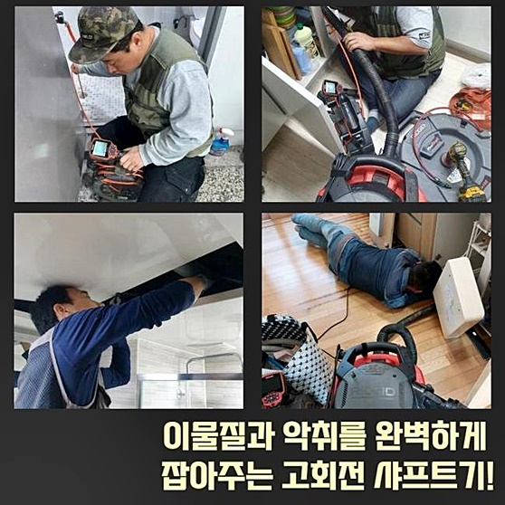
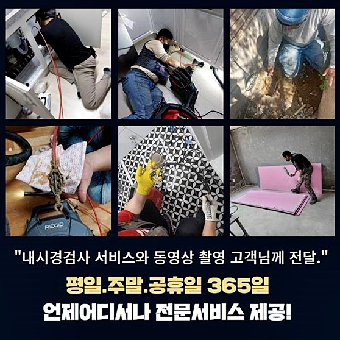

🏠 동작구 동작동변기역류 신대방동 집수정청소 설비하는곳
용인시 처인구 배관막힘 전문 시공 후기

📋 작업 개요
- 위치: 용인시 처인구, 수원시 영통구, 화성시 동탄
- 서비스 유형: 배관막힘, 누수수리, 고압세척, 내시경점검
- 작업 일시:
- 업체명: 하수구수사대 (010-5615-2118)
🔍 문제 상황
동작구 동작동변기역류 신대방동 집수정청소 설비하는곳
많은 사람들이 이용하는 현재 성업 중인 상가에서 하수도가 꽉 막혔다는 사정을 전해 들은 후 조속하게 막힘이 빚어진 곳에 이동해서 보수를 해드렸어요
수많은 판매업소가 여러 호실 모여있는 상가의 경우 확률적으로 하수구막힘이 더 잦아질 가능성이 높은 편입니다
통수가 시원치 않을 때 적절하게 뚫는 작업이 실행되지 않고 미뤄지면 들불 번지듯 피해 점포들이 증가할 수 있으므로 위급 사항으로 분류하여 작업지로 지체 없이 출동한다고 약속드려요
상가 건물은 많은 종류의 가게들이 상주하고 있는 만큼 사용하는 기간이 늘어날수록 물에 섞인 이물질 분자들이 건물의 하수관 내로 점차 층을 이루듯 쌓여가요
해당 건물에서 식당을 운영하시던 분이셨는데 어느 날 예고없이 나타난 하수구의 장애에 더불어 물도 거꾸로 솟아오르면서 가게 오픈도 못하시던 매출과 직결되는 문제가 있었어요
언제부터 이랬는지 질문해보니 불과 엊그제부터 뭔가 배수가 더딘 모습이 감지가 되었으나 저러다가 말거라고 흐린 눈으로 보면서 지나갔다고 하셨어요
하수구의 문제들은 물의 사용과 상당한 관련성이 있으므로 피해 규모를 축소하고 싶으시다면 비정상적인 측면이 관찰될 시 초장에 잡아줘야 해요
작업할 건물에 도착 후 사태의 심각도와 겉으로 드러나는 이슈들을 조사를 해보았는데 고객님께 이야기를 들었던 내용처럼 동시다발적으로 생겨있었어요

🔎 원인 분석
💡 전문가 진단: 정밀 진단 장비를 사용하여 슬러지의 고착 여부를 판명하고 타격/세척 작업을 실시했습니다.
게다가 구멍의 근방으로 썩은 듯한 구린내가 풍겨나오는 현상을 빠르게 판단할 수 있었습니다
코를 찌르는 악취가 있다면 도저히 영업을 할 수가 없는 동기가 될 수 있으니 분명하게 처리하는 게 좋습니다
복잡하게 얽힌 사건을 전적으로 잡기 위해서는 오류의 근원을 진단하고 적절한 솔루션을 발동시켜서 작업해 주는 것이 좋은 것입니다
오류가 생긴 섹션이 어딘지 탐지하려면 특화된 카메라를 내부에 진입시킵니다
유연한 호스를와 가느다란 형태를 포함하고 있으므로 어둡고 깊은 특성의 관로를 분명하게 중계를 해주는 기능이 있습니다
실시간으로 내부를 비추는 액정을 쳐다보면서 내측을 주의 깊게 조사하면 막히는 문제들이 발원한 장소와 부가적으로 불순물 성격까지 확실하게 알아낼 수 있어요
전용 내시경을 이용해서 전반적인 진단을 거쳐본 결과로 천장 속에 깔려있는 배관에서 뭔가 이상하다는 증거들이 일어났다는 사실을 깨닫게 됐습니다
배관의 내부 깊숙이까지 검사하니 유분기가 많은 기름진 잔여물이 밀집된 덩어리로 경화된 상태였고 한 부분에 부착된 오염물질은 물 속에서 부패 수준에 도달한 절박한 입장이셨습니다
하수관 쪽의 오류가 있는 작업장을 통계적으로 볼 때 보통은 기름진 성분의 노폐물이 내부에 완전하게 밀착되어 있는 경우가 가장 흔하게 발견되는데요
물과 기름은 분리되는 특성을 지니고 있으니 배관로에 점진적으로 잔여하게 된다면 결합된 한 덩어리로 강력하게 부착되고 덩어리는 더 커져서 통로를 아예 막아버립니다

🔧 작업 과정
확인한 배관의 상황이 중증이었던 만큼 여러 기기를 같이 써서 업무를 이어나가는 것이 필요하겠다고 판단내렸어요
회전력을 기반으로 한 샤프트를 작동시켜서 관로에서 발생한 흐름을 원활하게 풀어주고 작업하기 좋은 환경을 구축한 뒤 고압 세척기로 청소를 실시해서 완벽하게 보완하기로 했습니다
뛰어난 성능의 샤프트는 고체를 유연하게 풀어주는 기능을 발휘하는 툴이고 쇠사슬같은 말단 파트가 관로가 입는 손상을 최소화하며 작업할 수 있는 스펙이 있는 제품인데요!
특정 지점에 머무르고 있는 오염물질들로 인하여 비정상적인 하수구 작동이 유발됐다면 단지 샤프트만 가동하는 활동으로도 간단하게 하수도막힘을 고칠 수가 있습니다
흐름이 멈췄던 상태가 꽤나 해소된 듯 보인다면 다음은 막혀있는 배관로가 배치되어 있는 장소로 방향을 바꿔 고압청소의 순서에 들어가게 되는데요!
천장 부근의 작업이었기에 이행해야 하는 상황인지라 사다리를 세워두고 작업에 임하게 됐어요
단번에 뚫는 작업이라 상당한 수준의 찌꺼기가 마그마처럼 튀어나올 위험이 있으므로 방수가 되는 비닐로 야무지게 막아준 이후에 작업을 시행해서 오염과 침수피해를 막아요
고압세척은 고압의 물대포가 발포되어 안쪽을 세척하게 되는 절차인데 오랫동안 밀도있게 덩어리지거나 끈적한 점액질의 물질까지도 완전히 없애주는 힘이 있어요
그러나 주의해야할 점은 환경에 걸맞는 레벨을 조율하는 등 관련된 경험이 많은 숙련자가 쓰는 게 좋습니다
무작위로 쏘는 것이 아니라 타겟이 아닌 곳에 데미지가 입혀지지 않게끔 깊이에 따라서 강도를 다르게 설정해서 세정하는 것이 중요합니다
해당 기계가 만들어내는 압력의 수치는 상상 그 이상으로 뛰어나기에 무차별 공격으로 작업을 이어가게 되면 벽체가 압박받는 경우를 일으켜 누수와 침수처럼 오히려 악화가 되어버릴 암담한 사태를 낳게 됩니다
다수의 경우를 만나온 지식을 바탕으로 사용법을 깊이 이해하고 끝까지 안전하게 업무를 완수하기 위해서 매진하고 있어요
쾌적해진 하수도의 환경이 조성될 수 있게 메인이 되는 고압 세척에 들어가는 전 단계에서 배수로의 약한 부위가 없는지 체크하는 사전 과정을 통과하여 계획을 수립합니다
꼼꼼히 세척을 해주고 카메라를 다시 켜보면 전과는 큰 격차로 변화한 배관의 맑은 상태를 감지할 수 있게 됩니다
다분야의 점포들이 여러 호실 모여있는 상가일 경우라면 막힐 위험이 크니 주기를 설정하여 전문적인 청소와 점검을 받는다면 하수관의 장애로 인한 심적 부담감을 미리 해결을 볼 수 있게 됩니다
물이 아예 막히는 하수구 설비 손상이 생기면 무엇보다도 빠른 시일 내의 작업이 건물의 안녕을 돕습니다


✅ 작업 완료
방치되지 않고 스피드하게 처리가 완수된다면 보다 간편한 작업만으로도 고쳐나갈 수 있는 것을 항상 염두에 두시면 좋겠습니다
청소를 게을리하게 된다면 감당하기 힘든 부담스러운 일까지 터져버릴 수 있으니 이상함을 눈치채는 직후 고쳐달라고 요청을 주셔야만 빠른 시일 내에 장애물을 회복시켜드릴 수 있습니다
충만한 현장 경험을 갖춘 설비 전문진이 언제라도 출동하여 지긋지긋한 막힘에서 벗어날 수 있는 완성도 높은 배관청소를 고객님께 선보여드리고 있습니다
쾌적한 하수도를 구축하고 싶다면 내일로 미루지 마시고 든든하게 처리해주는 업체인 저희에게 위임해 주시면 성과로 보여드리겠습니다!



⚠️ 하수구 배관 막힘 예방 및 관리 가이드
- ✅ 머리카락, 비닐, 물티슈 등 물에 분해되지 않는 이물질은 절대 흘려보내지 마세요.
- ✅ 기름기 많은 식기는 설거지 전 키친타올로 먼저 기름때를 닦아내세요.
- ✅ 주기적으로 배수구에 뜨거운 물을 가득 부어주어 유지방 고착을 방지하세요.
- ✅ 작업 후 1년 이내 재발 시 무상 A/S 보증 서비스를 제공합니다.
💡 핵심 정리
- 확실한 장비 작업(내시경 점검 및 샤프트 스케일링)으로 원인을 뿌리 뽑습니다.
- 작업 후 1년 이내에 동일한 부위 재발 시 100% 무상 A/S 서비스를 보장합니다.
- 서울 · 경기 · 인천 전 지역에 24시간 언제든 긴급 출동할 수 있도록 항시 대기 중입니다.
❓ 자주 묻는 질문 (FAQ)
🚨 용인시 처인구 배관막힘 문제로 고민이신가요?
정확한 원인 진단과 확실한 시공으로 재발 없는 해결을 약속드립니다.
24시간 긴급 출동 | 서울 · 경기 · 인천 전지역 | 1년 내 재발 시 무상 A/S